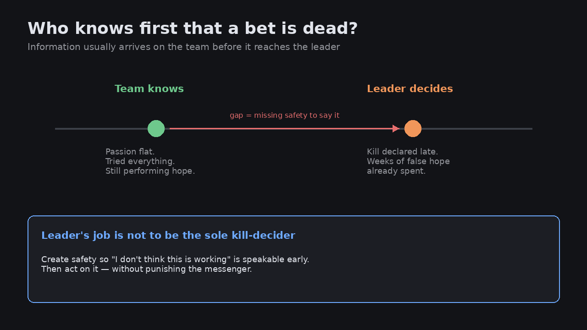

The team usually knows a project is dead before the leader does
Source: Josh Woodward via Lenny Rachitsky (@joshwoodward / @lennysan)
original post
What it claims
Josh Woodward’s line: the team almost always knows a project is dead before the leader does. His instinct as a leader is not to be the one who decides to shut it down. He watches for passion running out — the sense that people have tried everything and nothing is working. The goal is an environment where people feel safe enough to say, “I don’t think this is working.”
Why it matters for a PO
POs and product leaders often treat kill decisions as a personal act of courage. That frames the problem wrong. The information already exists on the team; what is missing is safety to surface it. If the only way a bet dies is when you declare it dead, you will always be late — and the team will spend weeks performing hope.
3 takeaways
- Late kills are usually an information-safety failure, not a judgment failure by the leader.
- Watch for passion going flat and “we’ve tried everything” language — treat them as leading indicators, not mood.
- Your job is to make “this isn’t working” speakable early, then act on it without punishing the messenger.
Practice this week
In your next bet review, ask each person privately: “On a scale of 1–5, how alive is this?” If the team’s average is two points below yours, ask what they already know that you are not hearing — and thank them before you decide.